FolioNotes
Capture once.
Your Mac files it.
One Markdown capture field. A model running on your Mac decides where each note goes. Everything stays as plain files in a folder you own.
Apple Silicon · macOS 14 or later
FolioNotes is a Mac app for Apple Silicon. Open this page on your Mac to download.

Your notes stay
on your Mac.
Filing, search and answers use models stored on your machine. There is no account, no cloud service and no analytics.
- accounts
- 0
- cloud services
- 0
- plain Markdown files
- 100%
Everything in its place.
Without lifting a finger.
One field. Filed.
Write in plain Markdown. A local model proposes where the note belongs, and you confirm with a keypress.
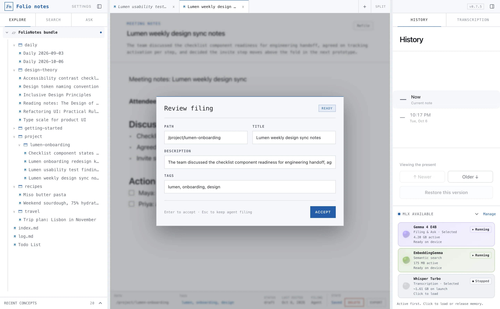
Plain folders.
Notes are Markdown with frontmatter in a normal folder. No database, no lock-in.
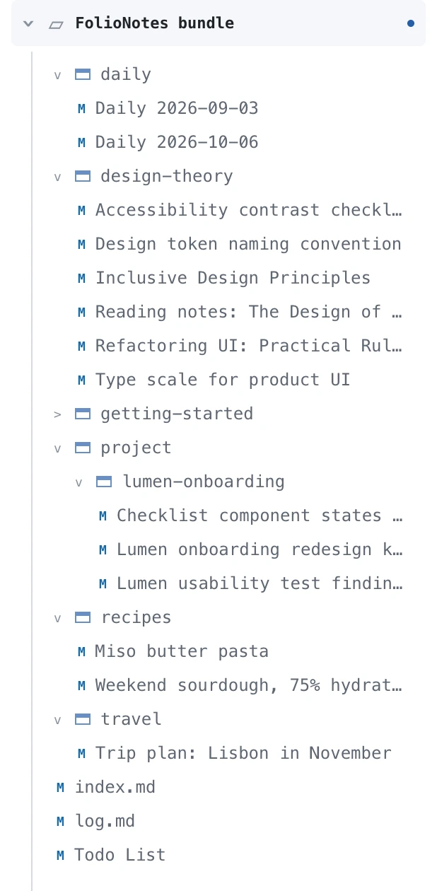
Find it, or ask it.
Search combines keywords and embeddings. Ask writes a grounded answer with citations.
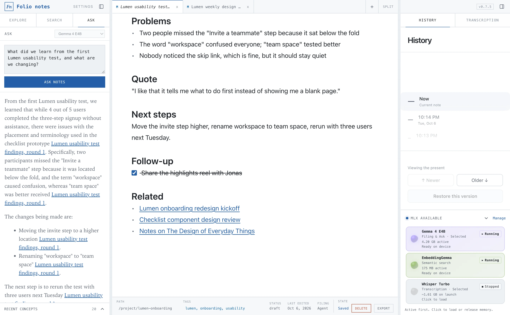
Notes that connect.
Links and backlinks are indexed automatically from Markdown links and source provenance.
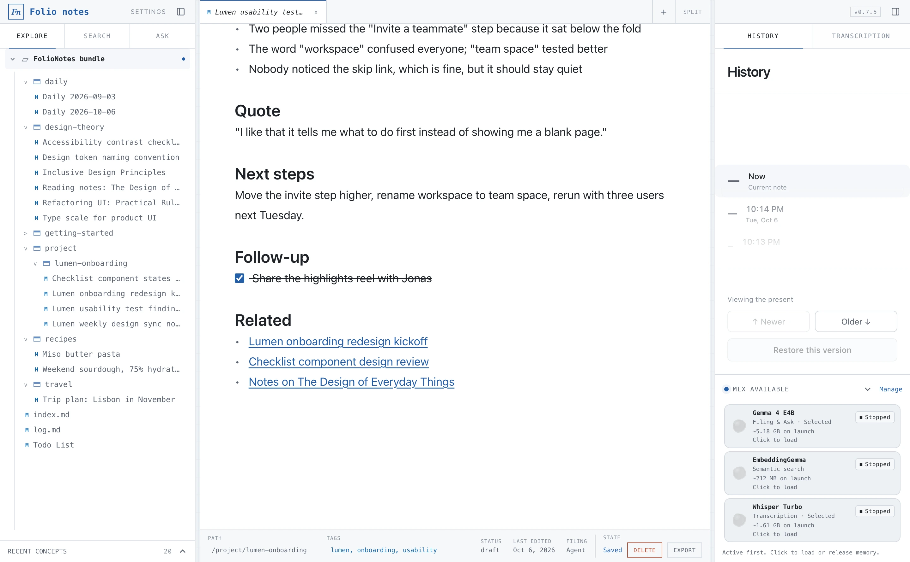
Every version kept.
Edit freely and restore older content whenever you need it.
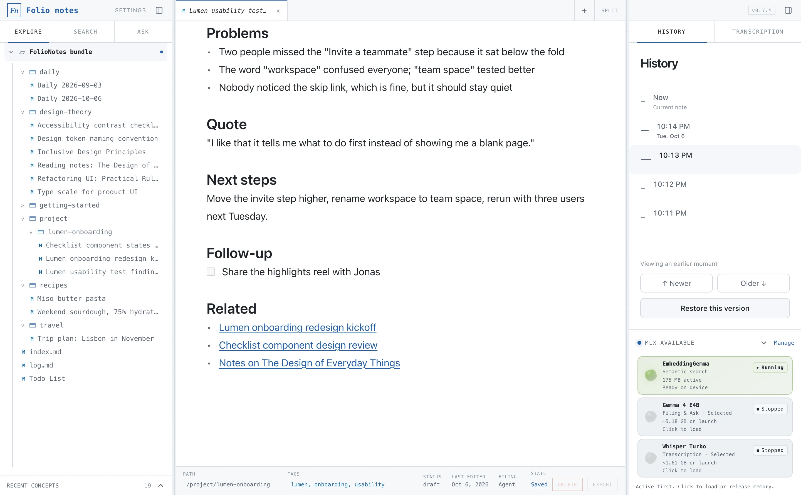
Refile with review.
Move a saved note through a review dialog that proposes a path and metadata. Discard leaves it unchanged.
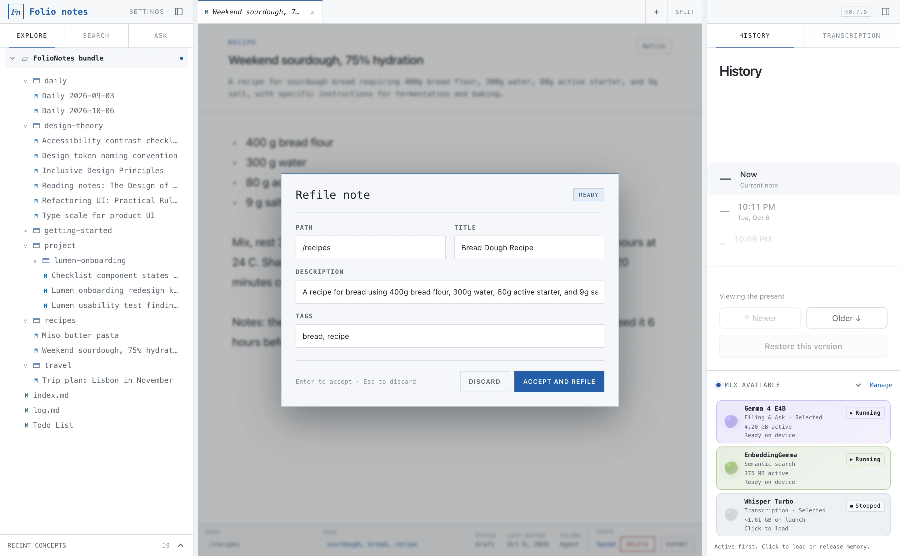
And a lot more.
Export, lifecycle states, tag filters, bundles, backup and familiar shortcuts.
See everything
Agent-first storage
Your notes are an open knowledge base.
FolioNotes writes Open Knowledge Format v0.2: Markdown with frontmatter that records provenance, lifecycle state and generation metadata, plus generated indexes and logs. Every capture is also kept as an immutable raw note, so the original words are never rewritten.
Because it is just a folder of files, any AI agent, script or editor can read it without an API.
---
type: Usability Testing Report
title: Lumen usability test findings, round 1
description: Findings from five moderated sessions on the checklist prototype, indicating success with the signup flow but issues with step placement and terminology.
tags: &a1
- lumen
- onboarding
- usability
status: draft
generated:
by: human:local
at: 2026-10-06T20:14:33.701Z
filing:
by: okf-notetaker/mlx-community/gemma-4-e4b-it-4bit
at: 2026-10-06T20:07:48.109Z
sources:
- id: raw-capture
resource: /references/inbox/20261006T200748Z-lumen-usability-test-findings-round-1-e675.md
title: Raw inbox capture
author: human:local
capture_id: confirmation:0903013b84f0bb8bcfd9ea6c
filing_by: okf-notetaker/mlx-community/gemma-4-e4b-it-4bit
capture_content: |-
Lumen usability test findings, round 1
Five moderated sessions with first-time users on the checklist prototype.
## What worked
- 4 of 5 completed the three-step signup without help
- The progress ring made people want to finish the checklist
## Problems
- Two people missed the "Invite a teammate" step because it sat below the fold
- The word "workspace" confused everyone; "team space" tested better
- Nobody noticed the skip link, which is fine, but it should stay quiet
## Quote
"I like that it tells me what to do first instead of showing me a blank page."
## Next steps
Move the invite step higher, rename workspace to team space, rerun with three users.
confirmation:
id: confirmation:0903013b84f0bb8bcfd9ea6c
draftId: null
mode: new
destinationId: /project/lumen-onboarding/lumen-usability-test-findings-round-1-2026-10-06.md
destination:
id: /project/lumen-onboarding/lumen-usability-test-findings-round-1-2026-10-06.md
directory: /project/lumen-onboarding
filename: lumen-usability-test-findings-round-1-2026-10-06.md
actor: okf-notetaker/mlx-community/gemma-4-e4b-it-4bit
proposal:
directory: /project/lumen-onboarding
filename: lumen-usability-test-findings-round-1-2026-10-06.md
title: Lumen usability test findings, round 1
description: Findings from five moderated sessions on the checklist prototype, indicating success with the signup flow but issues with step placement and terminology.
tags:
- lumen
- onboarding
- usability
finalId: /project/lumen-onboarding/lumen-usability-test-findings-round-1-2026-10-06.md
finalFields:
directory: /project/lumen-onboarding
filename: lumen-usability-test-findings-round-1-2026-10-06.md
title: Lumen usability test findings, round 1
description: Findings from five moderated sessions on the checklist prototype, indicating success with the signup flow but issues with step placement and terminology.
tags: *a1
confirmedAt: 2026-10-06T20:08:01.674Z
oldId: /project/lumen-onboarding/lumen-usability-test-findings-round-1-2026-10-06.md
---
# Captured note
Five moderated 45-minute sessions with first-time users on the checklist prototype.
## What worked
- 4 of 5 completed the three-step signup without help
- The progress ring made people want to finish the checklist
## Problems
- Two people missed the "Invite a teammate" step because it sat below the fold
- The word "workspace" confused everyone; "team space" tested better
- Nobody noticed the skip link, which is fine, but it should stay quiet
## Quote
"I like that it tells me what to do first instead of showing me a blank page."
## Next steps
Move the invite step higher, rename workspace to team space, rerun with three users next Tuesday.
## Follow-up
- [x] Share the highlights reel with Jonas
## Related
- [Lumen onboarding redesign kickoff](/project/lumen-onboarding/lumen-onboarding-redesign-kickoff-meeting-notes-2026-10-06.md)
- [Checklist component design review](/project/lumen-onboarding/checklist-component-states-design-review-2026-10-06.md)
- [Notes on The Design of Everyday Things](/design-theory/reading-notes-the-design-of-everyday-things-don-norman-2026-10-06.md)Local LLM filing
One field. The model files it. You confirm.
Press Cmd Enter and the selected local model reads the whole note and proposes a path, title, type and tags. Every capture stays one note; it is never split apart.
- Reuses your existing folders and tags instead of inventing new ones
- Todos append to one todo list, daily notes to a note per day
- Nothing is saved until you accept the proposal
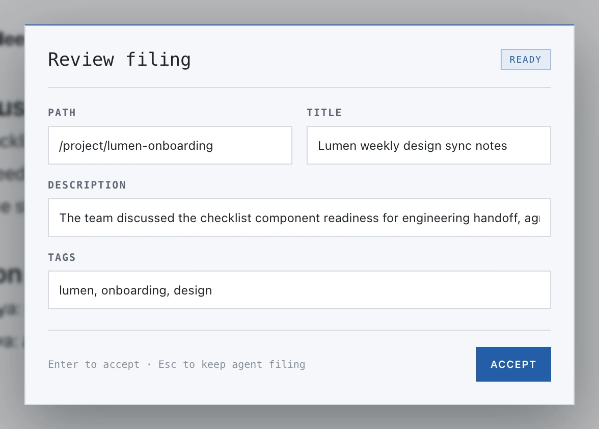
Models on Apple Silicon
Small models, run through MLX.
Pick a generation model in Settings: Qwen 3.5 4B, Llama 3.2 3B Instruct or Gemma 4 E4B. EmbeddingGemma handles semantic search. Models are downloaded only when you ask, with progress and retry, and can be removed again.
- Llama 3.2 3B Instruct 4-bit~1.81 GB
- Qwen 3.5 4B 4-bit~3.06 GB
- Gemma 4 E4B~5.18 GB
- EmbeddingGemma~212 MB
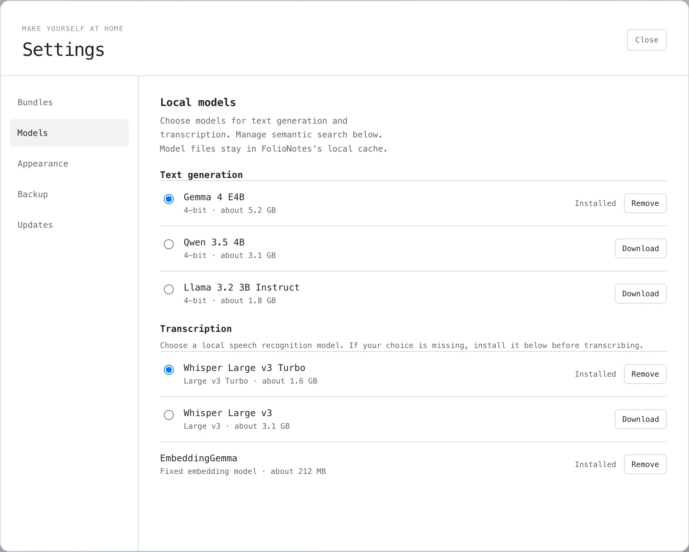
Search and Ask
Find it, or ask it.
Search combines metadata, lifecycle, relationships, keywords and EmbeddingGemma embeddings. It never loads the larger answer model.
When you want an answer, Ask uses the model you selected and writes a grounded response with links to the notes it cites.
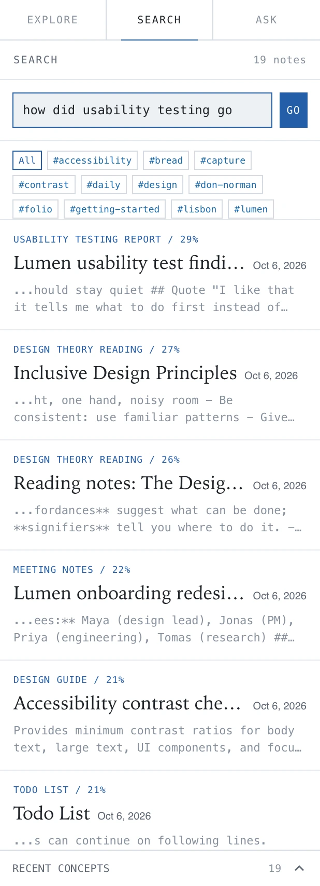
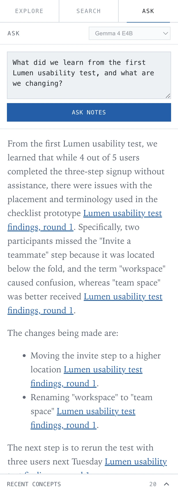
Transcripts
Turn recordings into editable notes.
Import AAC, AIFF, FLAC, M4A, MP3 or WAV files. FolioNotes transcribes them on your Mac with Whisper large-v3-turbo (about 1.61 GB, downloaded on request) and opens an editable Markdown note with the source filename, duration and a link back to the source note. Regenerate a concise summary with your local text model.
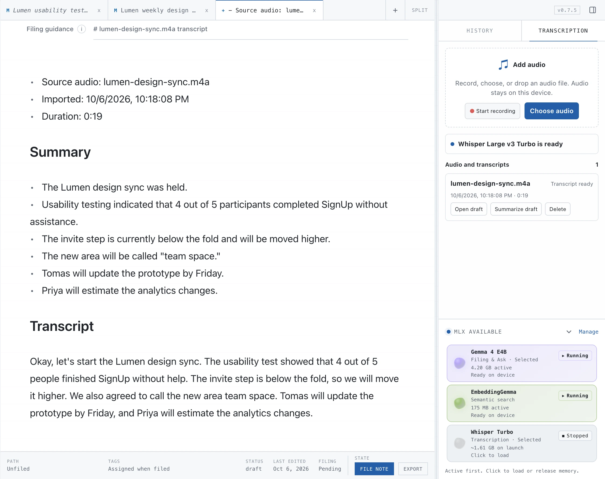
History
Every note keeps its history.
Edit freely. Each note records its earlier versions, and you can restore older content whenever you need it. Refiling moves a note to a new path without losing that history.
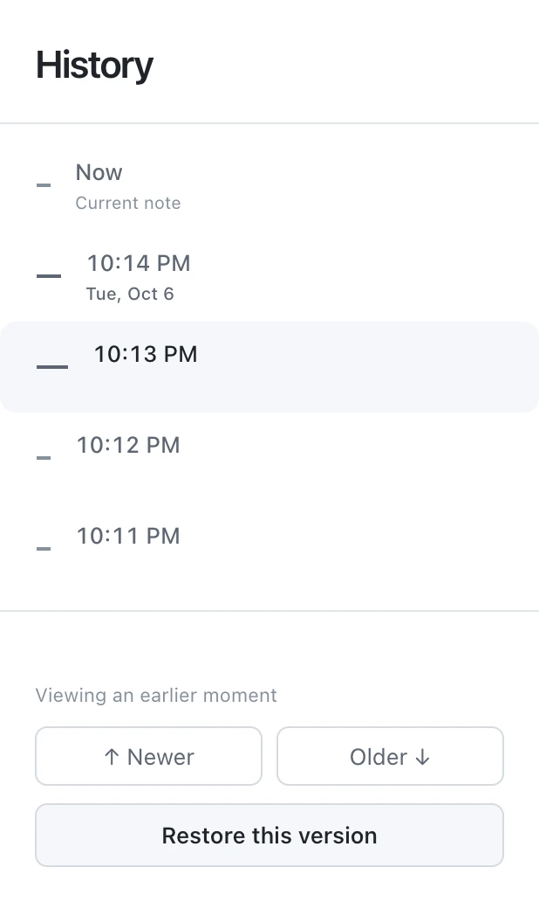
Links and relationships
Notes that connect themselves.
Links and backlinks are indexed automatically from Markdown links and source provenance. FolioNotes also suggests semantically related notes. A suggestion becomes a link only after you confirm it.
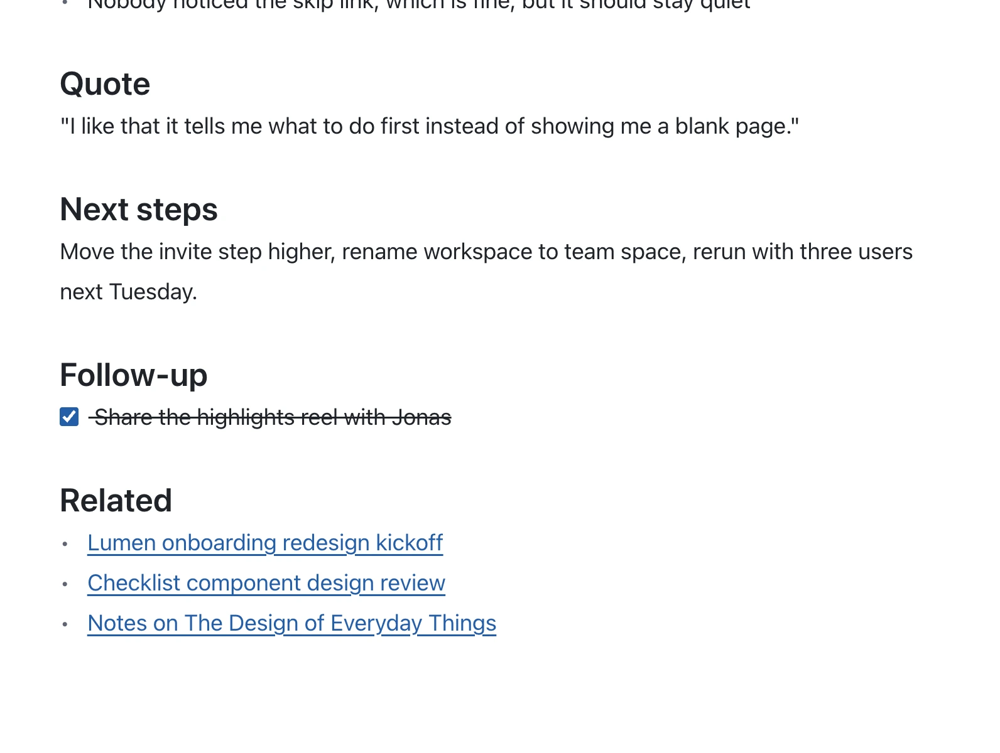
A closer look
And a lot more.
Markdown and PDF export
Export filed notes and local drafts.
Lifecycle states
Draft, stable or deprecated, with a stale-after date.
Tag filters
Click a tag to filter exactly.
Multiple bundles
Separate note collections, switchable in Settings.
Backup
Back up from Settings, or just copy the folder.
Familiar shortcuts
Cmd+B, Cmd+I, Cmd+K, Cmd+Shift+F and more.
Privacy
Private by design.
Everything runs on your Mac. There is no account, no cloud service and no analytics.
- Filing, search and answers use models stored on your machine.
- The network is used only for model downloads you request (from Hugging Face) and for update checks against GitHub Releases.
- Notes and the search index live as plain files in
~/Documents/Folio.
Requirements
- Mac
- Apple Silicon (M1 or later)
- System
- macOS 14 Sonoma or newer
- Disk space
- About 2–7 GB for models, depending on your choice. EmbeddingGemma is about 212 MB; the generation models range from about 1.81 GB to 5.18 GB; Whisper is about 1.61 GB.
- Generation models
- Qwen 3.5 4B, Llama 3.2 3B Instruct, Gemma 4 E4B, run with MLX
- Search model
- EmbeddingGemma
- Transcription
- Whisper large-v3-turbo. Imports AAC, AIFF, FLAC, M4A, MP3 and WAV.
- Storage
- Plain Markdown with OKF frontmatter in
~/Documents/Folio - Distribution
- Signed with a Developer ID and notarized by Apple. Updates install automatically.
- License
- Open source under the MIT License
Questions.
Does it work on an Intel Mac?
No. FolioNotes runs its models with MLX, which requires Apple Silicon (M1 or later).
Is there a Windows or Linux version?
No. FolioNotes is a macOS app for Apple Silicon.
Where are my notes stored?
In ~/Documents/Folio, as Markdown files with OKF frontmatter, along with the search index. Open the folder in Finder or any editor.
Can I take my notes with me?
Yes. Nothing is locked in. Your notes are plain Markdown in an open format, so you can copy the folder, open it in another tool, or point an AI agent at it.
Does it need an internet connection?
Not for everyday use. The network is used only when you choose to download a model, and to check for updates.
Is it free?
Yes. FolioNotes is open source under the MIT License.
How do updates work?
The app checks GitHub Releases and installs signed updates. You can also download the latest version from the Releases page.
Try FolioNotes.
Free and open source. Download, open the DMG and drag it to Applications.
Apple Silicon · macOS 14 or later